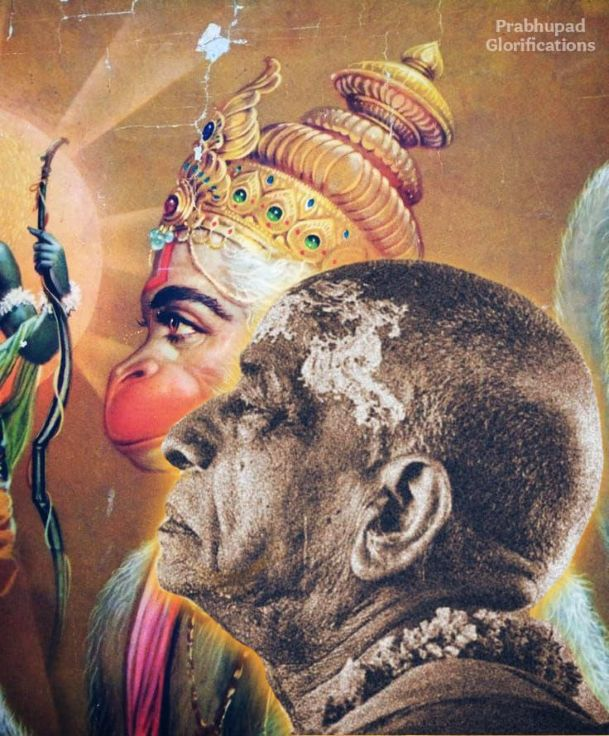

"What Hanumān did for Rāma, Prabhupāda did for Kṛṣṇa"

No one could have imagined what wonderful things Hanumān would do. Although a senior and respected member of his community, he did not appear to be particularly special. But when the time came for special service, Hanumān performed such extraordinary feats that his name is now inseparable from Lord Rāma’s. Similarly, Śrīla Prabhupāda seemed to be just another devotee. But now that he has spread Lord Kṛṣṇa’s fame far and wide, the people of the world cannot but remember him when they remember Kṛṣṇa. Jaya Śrīla Prabhupāda!
Hanumān was sent to find the whereabouts of Sītā. Having done that, he thought to do more, which resulted in his burning Laṅkā. In the same way, Śrīla Prabhupāda could have taken the instruction to preach in English” to mean merely delivering a few lectures. But he took that instruction as his task to spread Kṛṣṇa consciousness all over the world—in all languages—and undertook numerous projects to fulfil that goal. aya Śrīla Prabhupāda!
Book : Jay Shrila Prabhupāda by HH Bhakti Vikās Swami Māhārāj
Chapter : Sarva-devamayo Guruḥ